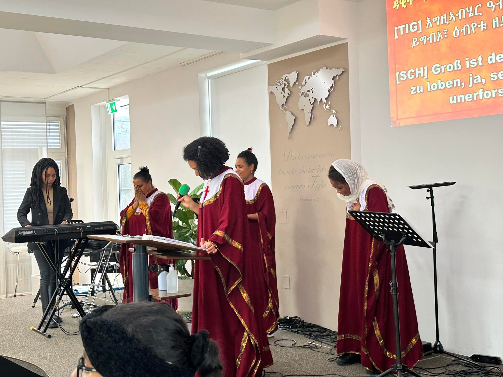
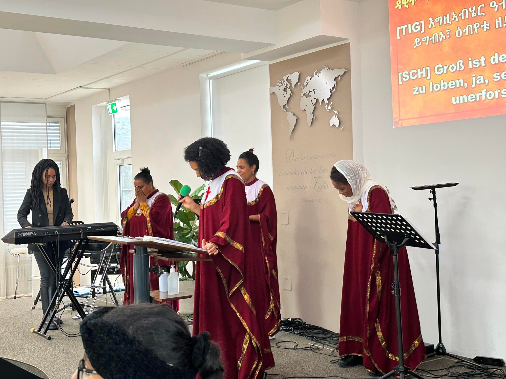

Tensai Hiyaw Amlak is a vibrant and welcoming Eritrean church community located in the heart of Zürich, Switzerland. Rooted in the Holy Trinity and with Jesus Christ as our Lord and Savior, we are dedicated to nurturing spiritual growth, fostering a sense of togetherness among our members, and guiding everyone to focus on Him.
Join us in heartfelt worship as we glorify God through songs, prayers, and fellowship. Everyone is welcome!

 

Email: info@tensai.org
Phone: +41 79 123 4567
Address: Bahnhofstrasse 10, 8001 Zürich, Switzerland